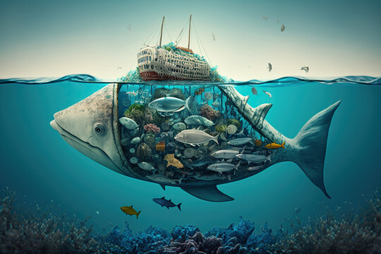

The world's oceans are vital to life on Earth, covering over 70% of
the planet's surface and providing essential resources for humans
and wildlife. However, the health of our marine ecosystems is under
threat due to various human activities. Sustainable Development Goal
14: Life Below Water aims to conserve and sustainably use the
oceans, seas, and marine resources. Unfortunately, several critical
problems are jeopardizing the well-being of these vital
ecosystems.

Problem 1
What is overfishing?
Description :
Overfishing occurs when fish and other marine species are caught
at a faster rate than they can reproduce. This leads to a severe
depletion of fish populations, threatening the balance of marine
ecosystems and the survival of species.
Causes:
High Demand: Increasing demand for seafood due to population
growth and dietary preferences.
Advanced Fishing Technology: Improved fishing technology leads
to more efficient but unsustainable fishing practices.
Lack of Regulation: Inadequate or poorly enforced fishing
regulations and quotas.
Imapacts:
Ecosystem Imbalance: Removing large numbers of fish disrupts
food webs and the balance of marine ecosystems.
Species Endangerment: Many species become endangered or
extinct due to overfishing.
Economic Loss: Coastal communities and industries dependent on
fishing suffer economic losses.
Solutions:
Sustainable Fishing Practices: Implementing quotas and using
selective fishing gear to avoid catching non-target species.
Marine Protected Areas: Establishing areas where fishing is
restricted or prohibited to allow fish populations to recover.
International Regulations: Enforcing international laws and
agreements to manage and conserve fish stocks.
Problem 2
What is Pollution?
Description:
Pollution, including plastic waste, chemicals, oil spills, and
agricultural runoff, contaminates the ocean. This pollution
poses a significant threat to marine life and ecosystems.
Causes:
Improper Waste Disposal: Poor waste management practices lead
to plastic and other debris entering the ocean.
Industrial Discharge: Factories and industries discharge
pollutants directly into waterways.
Oil Spills: Accidental spills during oil extraction,
transportation, and storage.
Impact:
Marine Life Harm: Ingested plastics and toxins can kill marine
animals and birds.
Habitat Degradation: Pollutants damage critical habitats like
coral reefs and mangroves.
Human Health Risks: Contaminated seafood can cause health
issues in humans.
Clean-up Initiatives: Organizing beach and ocean clean-up
projects to remove existing pollution.
Stricter Regulations: Enforcing regulations on industrial and
agricultural runoff and oil spill prevention.
Problem 3
What are climate changes?
Description:
Climate change leads to rising ocean temperatures, sea level
rise, and increased CO2 levels, causing ocean acidification.
These changes have widespread impacts on marine life and
ecosystems.
Causes:
Greenhouse Gas Emissions: Burning fossil fuels for energy,
deforestation, and industrial activities release CO2 and other
greenhouse gases.
Deforestation: Reducing forests diminishes the Earth’s
capacity to absorb CO2.
Agricultural Practices: Livestock farming and rice paddies
emit significant amounts of methane, a potent greenhouse gas.
Impact:
Coral Bleaching: Warmer waters cause corals to expel the algae
living in their tissues, leading to coral bleaching and death.
Sea Level Rise: Rising sea levels threaten coastal habitats
and human communities.
Ocean Acidification: Increased CO2 levels lower the pH of the
ocean, affecting shell-forming organisms like corals and
shellfish.
Solutions:
Reducing Carbon Emissions: Cutting greenhouse gas emissions
through renewable energy and energy efficiency.
Protecting Habitats: Conserving and restoring critical
habitats like mangroves and wetlands that can absorb CO2.
Research and Monitoring: Investing in research to better
understand climate impacts and develop adaptive strategies.
Problem 4
What is Habitat Destruction?
Description:
Habitat destruction occurs due to coastal development,
destructive fishing practices, and climate change, leading to
the loss of vital marine habitats such as coral reefs,
mangroves, and seagrass beds.
Causes:
Coastal Development: Expanding coastal cities and resorts
leads to the destruction of natural habitats.
Destructive Fishing Practices: Methods like bottom trawling
and dynamite fishing damage the ocean floor and coral reefs.
Climate Change: Rising temperatures and ocean acidification
contribute to habitat loss.
Impact:
Loss of Biodiversity: Destruction of habitats leads to a
decline in marine species.
Ecosystem Services Disruption: Loss of habitats that provide
crucial services like water filtration and storm protection.
Fishery Decline: Many fish species rely on specific habitats
for breeding and feeding.
Solutions:
Conservation Efforts: Protecting and restoring vital habitats
through conservation programs.
Sustainable Development: Promoting sustainable coastal
development practices.
Marine Spatial Planning: Implementing marine spatial planning
to balance human activities and conservation.
Problem 5
What is Bycatch and Illegal Fishing?
Description:
Bycatch refers to the unintentional capture of non-target
species during fishing operations. Illegal, unreported, and
unregulated (IUU) fishing involves fishing activities that do
not comply with conservation and management measures.
Causes:
Non-selective Fishing Gear: Using gear that captures all
marine life indiscriminately.
Lack of Monitoring: Insufficient monitoring and enforcement of
fishing regulations.
High Market Demand: High demand for certain fish species
drives illegal fishing activities.
Impact:
Non-Target Species Mortality: Bycatch kills millions of
dolphins, turtles, and seabirds annually.
Resource Depletion: IUU fishing depletes fish stocks and
undermines efforts to manage fisheries sustainably.
Economic Loss: Legal fishers and communities suffer economic
losses due to unfair competition.
Solutions:
Selective Fishing Gear: Using gear that reduces bycatch and
targets specific species.
Enforcement of Regulations: Strengthening enforcement of
international fishing laws and agreements.
Monitoring and Reporting: Implementing systems to monitor and
report illegal fishing activities.
Long-term Effects on Marine Life
Over time, the cumulative impact of human activities on marine
ecosystems has led to significant and often irreversible changes.
Understanding these long-term effects is crucial for developing
strategies to mitigate damage and promote ocean conservation.
Here’s how key problems affect marine life over time:
Overfishing
Short-term: Initial depletion of target fish species, leading to
reduced catches and economic losses for fishing communities.
Medium-term: Disruption of food webs as predator-prey
relationships are altered, causing imbalances in marine
ecosystems.
Long-term: Collapse of fish populations, loss of biodiversity, and
the potential extinction of species, leading to ecosystem
degradation and loss of ecosystem services
Pollution
Short-term: Immediate harm to marine organisms through ingestion
or entanglement in plastics, exposure to toxic substances, and
degradation of water quality.
Medium-term: Accumulation of pollutants in the food chain, leading
to health issues in marine life and humans who consume seafood.
Long-term: Persistent pollutants, such as microplastics and heavy
metals, remain in the environment for decades, causing chronic
health problems for marine organisms and altering ecosystem
functions.
Climate Change
Short-term: Increased water temperatures and ocean acidification
stress marine species, leading to coral bleaching and shifts in
species distribution.
Medium-term: More frequent and severe storms, sea level rise, and
changes in ocean currents disrupt habitats and migration patterns,
affecting the survival of marine species.
Long-term: Fundamental changes in marine ecosystems, including the
loss of coral reefs, altered species composition, and reduced
biodiversity, compromising the ocean’s ability to support life and
human livelihoods.
Habitat Destruction
Short-term: Direct loss of critical habitats such as coral reefs,
mangroves, and seagrass beds due to coastal development, trawling,
and other destructive practices.
Medium-term: Reduced habitat availability leads to declining
populations of species that rely on these environments for
breeding, feeding, and shelter.
Long-term: Irreversible loss of habitats results in the permanent
decline of marine biodiversity, weakening ecosystem resilience and
reducing the capacity of marine environments to recover from
disturbances.
Bycatch and Illegal Fishing
Short-term: Immediate mortality of non-target species, including
endangered and juvenile fish, marine mammals, seabirds, and
turtles.
Medium-term: Decreased populations of bycatch species, disrupting
marine food webs and ecological balance.
Long-term: Endangered species face an increased risk of
extinction, leading to the loss of keystone species and long-term
impacts on ecosystem structure and function.